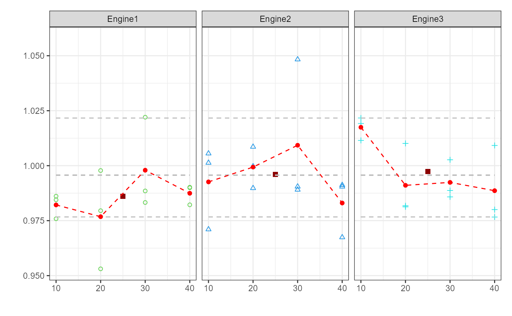
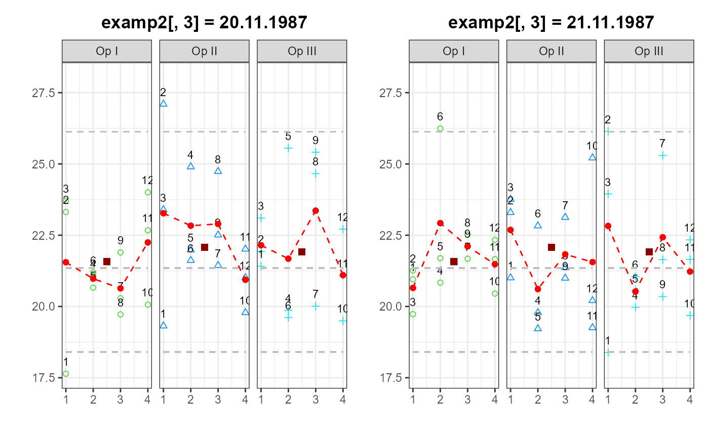
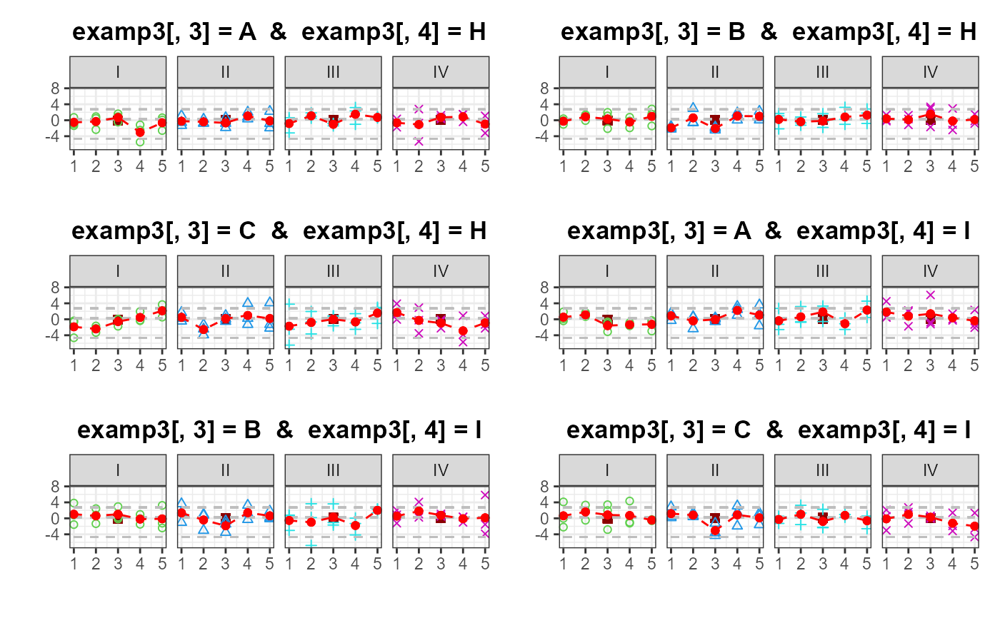

mvPlot.RdCreates a plot for visualizing the relationships between a response variable and multiple factors.
mvPlot(
response,
fac1,
fac2,
fac3,
fac4,
sort = TRUE,
col,
pch,
labels = FALSE,
quantile = TRUE,
FUN = NA
)The values of the response in a vector.response must be declared.
Optional vector providing factor 4 as shown in the example.
Vector providing factor 1 as shown in the example.fac2 must be declared.
Logical value indicating whether the sequence of the factors given by fac1 - fac4 should be reordered to minimize the space needed to visualize the Multi-Vari-Chart. By default sort is set to ‘TRUE’.
Graphical parameter. Vector containing numerical values or character strings giving the colors for the different factors. By default col starts with the value ‘3’ and is continued as needed.
Graphical parameter. Vector containing numerical values or single characters giving plotting points for the different factors. See points for possible values and their interpretation. Note that only integers and single-character strings can be set as a graphics parameter (and not NA nor codeNULL). By default pch starts with the value ‘1’ and is continued as needed.
Logical value indicating whether the single points should be labels with the row-number of the data.frame invisibly returned by the function mvPlot. By default labels is set to ‘FALSE’.
A logical value indicating whether the quanitiles (0.00135, 0.5 & 0.99865) should be visualized for the single groups. By default quantile is set to ‘TRUE’.
An optional function to be used for calculation of response for unique settings of the factors e.g. the mean. By default FUN is set to ‘NA’ and therfore omitted.
mvPlot returns an invisible list cointaining: a data.frame in which all plotted points are listed and the final plot. The option labels can be used to plot the row-numbers at the single points and to ease the identification.
#Example I
examp1 = expand.grid(c("Engine1","Engine2","Engine3"),c(10,20,30,40))
examp1 = as.data.frame(rbind(examp1, examp1, examp1))
examp1 = cbind(examp1, rnorm(36, 1, 0.02))
names(examp1) = c("factor1", "factor2", "response")
mvPlot(response = examp1[,3], fac1 = examp1[,2],fac2 = examp1[,1],sort=FALSE,FUN=mean)

#Example II
examp2=expand.grid(c("Op I","Op II","Op III"),c(1,2,3,4),
c("20.11.1987","21.11.1987"))
examp2=as.data.frame(rbind(examp2, examp2, examp2))
examp2=cbind(examp2, rnorm(72, 22, 2))
names(examp2) = c("factor1", "factor2", "factor3", "response")
mvPlot(response = examp2[,4], fac1 = examp2[,1],
fac2 = examp2[,2], fac3 = examp2[,3], sort=TRUE, FUN=mean, labels=TRUE)

#Example III
examp3 = expand.grid(c("A","B","C"),c("I","II","III","IV"),c("H","I"),
c(1,2,3,4,5))
examp3 = as.data.frame(rbind(examp3, examp3, examp3))
examp3 = cbind(examp3, rnorm(360, 0, 2))
names(examp3) = c("factor1", "factor2", "factor3", "factor4", "response")
mvPlot(response = examp3[,5], fac1 = examp3[,1],
fac2 = examp3[,2], fac3 = examp3[,3], fac4 = examp3[,4], sort=TRUE,
quantile=TRUE, FUN=mean)
